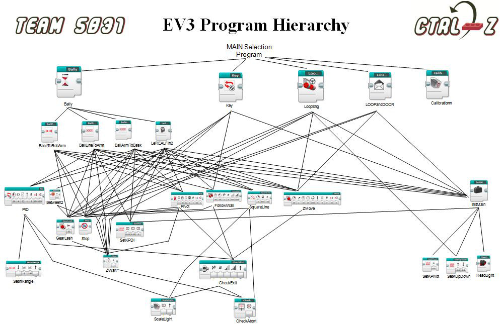
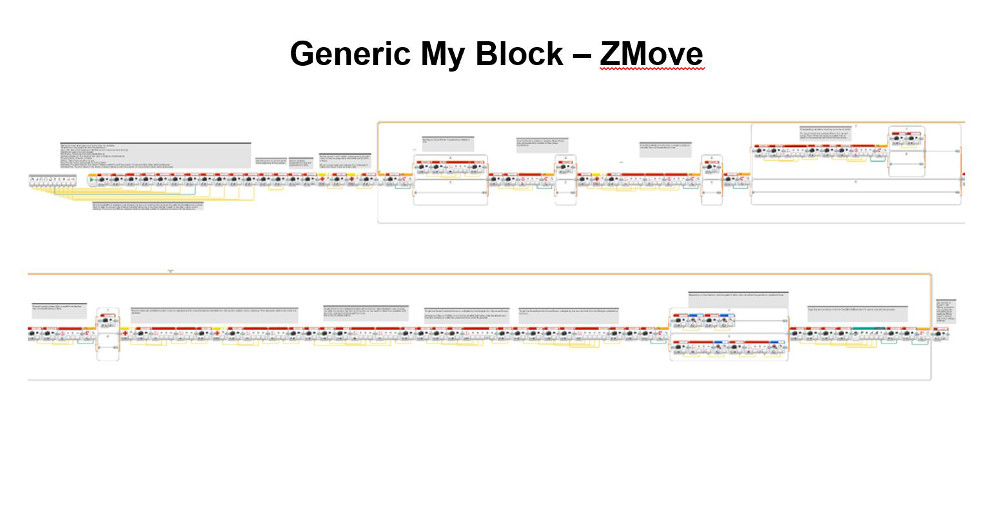

In the interest of maximizing programming efficiency, we use subroutines (i.e. MyBlocks) whenever possible. Subroutines are used for typical robot movements, like line following, squaring to a line, error-corrected movements, etc., as well as for entire missions. The use of subroutines allows us to re-use programming code and enjoy the benefits of an efficient mission selection program. This diagram below illustrates the extent to which Ctrl-Z re-uses programming code.
This ScaleLight MyBlock allows us to read the raw values that a selected light sensor currently sees and either output them directly or use a formula to convert them to a reading in a range from 0 being white to 1000 being black (based on our values for white and black collected in calibration) and then output them. The equation we created to scale our light readings uses variables for the minimum and maximum raw light readings collected in calibration. Inputting the minimum raw light reading (white) outputs a value of 0, and the maximum raw light reading (black) outputs a value of 1000. With these two pairs of coordinates, we identified a linear function. When you input the current raw light value the linear function will scale it to some point in the range and output a usable calibrated value from 0 to 1000.
Returned light reading by the block = 1000* (current raw light value – min) / (max – min)
Our Proportional Integral Derivative Line Following program is a smoother way to line follow that adjusts the power levels of motors B and C proportionally to the distance from the edge of the line, which would have a light value of 500. It takes into account the error (the difference between the optimal and current light sensor reading), the integral (the sum of all errors), and the derivative (the difference between the current error and last error). Those values are scaled to an appropriate value for use in motor power levels based on three user-inputted coefficients in InitMain, Kp, Ki, and Kd.

This selection program allows us to quickly and efficiently switch programs/missions during the two-and-a half minute match. Our selection program contains MyBlocks, each contains one of our missions. The user of the robot simply starts the selection program and clicks the centre button to start the first mission. Then, when the mission finishes, the robot automatically advances to the next mission and waits for the user to click the centre button to run the appropriate mission. In case one needs to go backwards or forwards through the list of missions, the program accommodates that by allowing the user to navigate with the left and right arrow buttons.
For straighter and more accurate movements, our program continuously measures the distances travelled by each drive motor and constantly adjusts their speeds to maintain the predetermined ratio of the distance travelled by motors B and C. This MyBlock also allows for more accurate robot arc turns.
We have created a MyBlock subroutine called Check-Abort that constantly checks whether the up arrow button is pressed. If so, Check-Abort exits the loop in the MyBlock it is contained in. Our programs are made almost exclusively out of MyBlocks, including error-correction, wait blocks, pivot-turns, PID, etc. Therefore, in the rare circumstance that we must stop our robot, we can do so at any time and still stay within our overall selection program, rather than fiddle with the EV3 buttons in selecting the next mission.